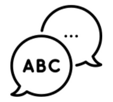

<section class="contenedor">

    <div class="opciones">

        <div class="columna">
            <a routerLink="/basico-home">
                
            </a>

            <a routerLink="/intermedio-home">
                
            </a>

            <a routerLink="/avanzado-home">
                
            </a>
        </div>


        <div class="columna">
            
            
            

        </div>

    </div>

</section>